2026 Higher Physics - Paper 2 marking instructions
Source: Scottish Qualifications Authority (SQA) / Qualifications Scotland. This is a StemInteract HTML companion, not an official HTML edition. Selectable text is supplied alongside original page images. Use the images or original PDF for equations, powers, fractions, vector notation, tables and diagrams; text extraction cannot fully preserve mathematical layout.
Jump to a question
PDF page 1
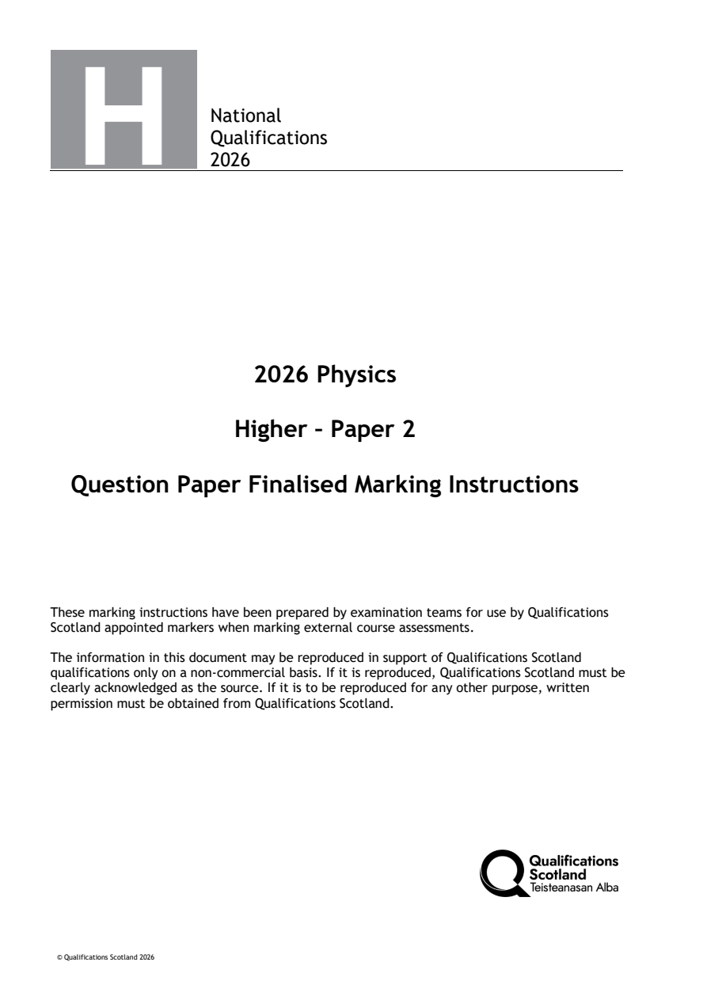
Selectable page text
National
Qualifications
2026
2026 Physics
Higher – Paper 2
Question Paper Finalised Marking Instructions
These marking instructions have been prepared by examination teams for use by Qualifications
Scotland appointed markers when marking external course assessments.
The information in this document may be reproduced in support of Qualifications Scotland
qualifications only on a non-commercial basis. If it is reproduced, Qualifications Scotland must be
clearly acknowledged as the source. If it is to be reproduced for any other purpose, written
permission must be obtained from Qualifications Scotland.
© Qualifications Scotland 2026PDF page 2
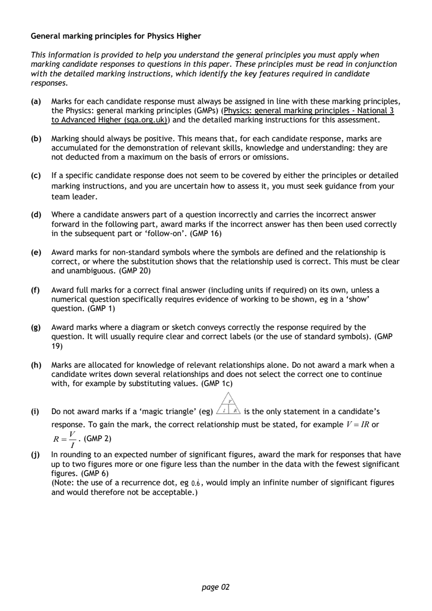
Selectable page text
General marking principles for Physics Higher
This information is provided to help you understand the general principles you must apply when
marking candidate responses to questions in this paper. These principles must be read in conjunction
with the detailed marking instructions, which identify the key features required in candidate
responses.
(a) Marks for each candidate response must always be assigned in line with these marking principles,
the Physics: general marking principles (GMPs) (Physics: general marking principles - National 3
to Advanced Higher (sqa.org.uk)) and the detailed marking instructions for this assessment.
(b) Marking should always be positive. This means that, for each candidate response, marks are
accumulated for the demonstration of relevant skills, knowledge and understanding: they are
not deducted from a maximum on the basis of errors or omissions.
(c) If a specific candidate response does not seem to be covered by either the principles or detailed
marking instructions, and you are uncertain how to assess it, you must seek guidance from your
team leader.
(d) Where a candidate answers part of a question incorrectly and carries the incorrect answer
forward in the following part, award marks if the incorrect answer has then been used correctly
in the subsequent part or ‘follow-on’. (GMP 16)
(e) Award marks for non-standard symbols where the symbols are defined and the relationship is
correct, or where the substitution shows that the relationship used is correct. This must be clear
and unambiguous. (GMP 20)
(f) Award full marks for a correct final answer (including units if required) on its own, unless a
numerical question specifically requires evidence of working to be shown, eg in a ‘show’
question. (GMP 1)
(g) Award marks where a diagram or sketch conveys correctly the response required by the
question. It will usually require clear and correct labels (or the use of standard symbols). (GMP
19)
(h) Marks are allocated for knowledge of relevant relationships alone. Do not award a mark when a
candidate writes down several relationships and does not select the correct one to continue
with, for example by substituting values. (GMP 1c)
(i) Do not award marks if a ‘magic triangle’ (eg) is the only statement in a candidate’s
response. To gain the mark, the correct relationship must be stated, for example V = IR or
V
R = . (GMP 2)
I
(j) In rounding to an expected number of significant figures, award the mark for responses that have
up to two figures more or one figure less than the number in the data with the fewest significant
figures. (GMP 6)
(Note: the use of a recurrence dot, eg 0.6, would imply an infinite number of significant figures
and would therefore not be acceptable.)
page 02PDF page 3
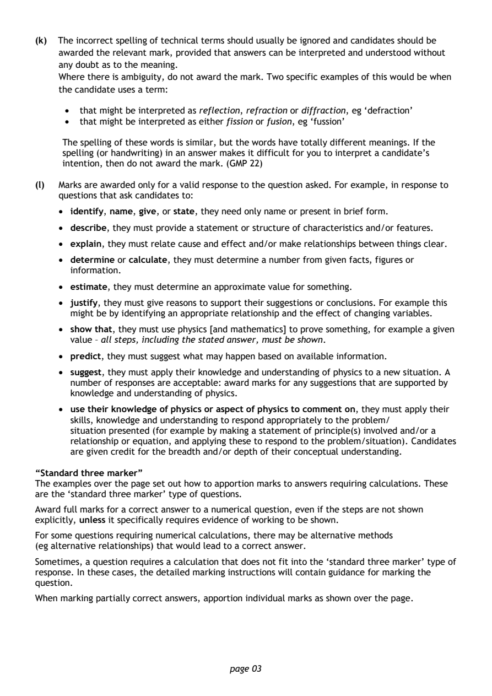
Selectable page text
(k) The incorrect spelling of technical terms should usually be ignored and candidates should be
awarded the relevant mark, provided that answers can be interpreted and understood without
any doubt as to the meaning.
Where there is ambiguity, do not award the mark. Two specific examples of this would be when
the candidate uses a term:
• that might be interpreted as reflection, refraction or diffraction, eg ‘defraction’
• that might be interpreted as either fission or fusion, eg ‘fussion’
The spelling of these words is similar, but the words have totally different meanings. If the
spelling (or handwriting) in an answer makes it difficult for you to interpret a candidate’s
intention, then do not award the mark. (GMP 22)
(l) Marks are awarded only for a valid response to the question asked. For example, in response to
questions that ask candidates to:
• identify, name, give, or state, they need only name or present in brief form.
• describe, they must provide a statement or structure of characteristics and/or features.
• explain, they must relate cause and effect and/or make relationships between things clear.
• determine or calculate, they must determine a number from given facts, figures or
information.
• estimate, they must determine an approximate value for something.
• justify, they must give reasons to support their suggestions or conclusions. For example this
might be by identifying an appropriate relationship and the effect of changing variables.
• show that, they must use physics [and mathematics] to prove something, for example a given
value – all steps, including the stated answer, must be shown.
• predict, they must suggest what may happen based on available information.
• suggest, they must apply their knowledge and understanding of physics to a new situation. A
number of responses are acceptable: award marks for any suggestions that are supported by
knowledge and understanding of physics.
• use their knowledge of physics or aspect of physics to comment on, they must apply their
skills, knowledge and understanding to respond appropriately to the problem/
situation presented (for example by making a statement of principle(s) involved and/or a
relationship or equation, and applying these to respond to the problem/situation). Candidates
are given credit for the breadth and/or depth of their conceptual understanding.
“Standard three marker”
The examples over the page set out how to apportion marks to answers requiring calculations. These
are the ‘standard three marker’ type of questions.
Award full marks for a correct answer to a numerical question, even if the steps are not shown
explicitly, unless it specifically requires evidence of working to be shown.
For some questions requiring numerical calculations, there may be alternative methods
(eg alternative relationships) that would lead to a correct answer.
Sometimes, a question requires a calculation that does not fit into the ‘standard three marker’ type of
response. In these cases, the detailed marking instructions will contain guidance for marking the
question.
When marking partially correct answers, apportion individual marks as shown over the page.
page 03PDF page 4
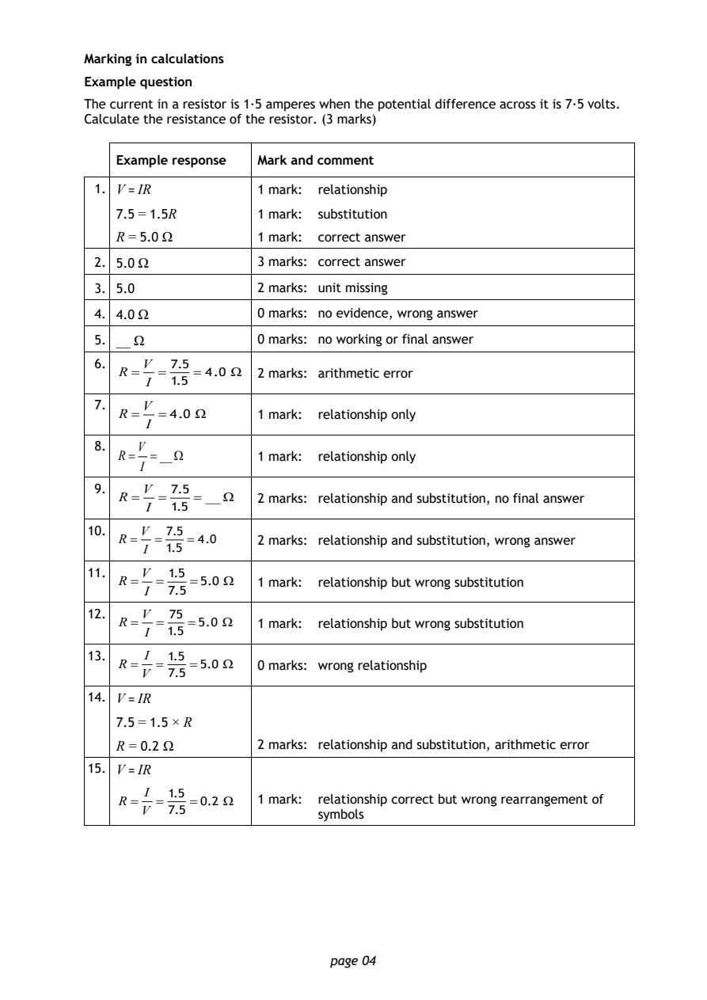
Selectable page text
Marking in calculations
Example question
The current in a resistor is 1·5 amperes when the potential difference across it is 7·5 volts.
Calculate the resistance of the resistor. (3 marks)
Example response Mark and comment
1. V = IR 1 mark: relationship
7.5 = 1.5R 1 mark: substitution
R = 5.0 Ω 1 mark: correct answer
2. 5.0 Ω 3 marks: correct answer
3. 5.0 2 marks: unit missing
4. 4.0 Ω 0 marks: no evidence, wrong answer
5. __ Ω 0 marks: no working or final answer
6. V 7.5
R = = =4.0 Ω 2 marks: arithmetic error
I 1.5
7. V
R= =4.0 Ω 1 mark: relationship only
I
8. V
R= =__Ω 1 mark: relationship only
I
9. V 7.5
R = = = __Ω 2 marks: relationship and substitution, no final answer
I 1.5
10. V 7.5
R= = =4.0 2 marks: relationship and substitution, wrong answer
I 1.5
11. V 1.5
R= = =5.0 Ω 1 mark: relationship but wrong substitution
I 7.5
12. V 75
R= = =5.0 Ω 1 mark: relationship but wrong substitution
I 1.5
13. I 1.5
R= = =5.0 Ω 0 marks: wrong relationship
V 7.5
14. V = IR
7.5 = 1.5 × R
R = 0.2 Ω 2 marks: relationship and substitution, arithmetic error
15. V = IR
I 1.5
R= = =0.2 Ω 1 mark: relationship correct but wrong rearrangement of
V 7.5 symbols
page 04PDF page 5
Paper 2, Question 1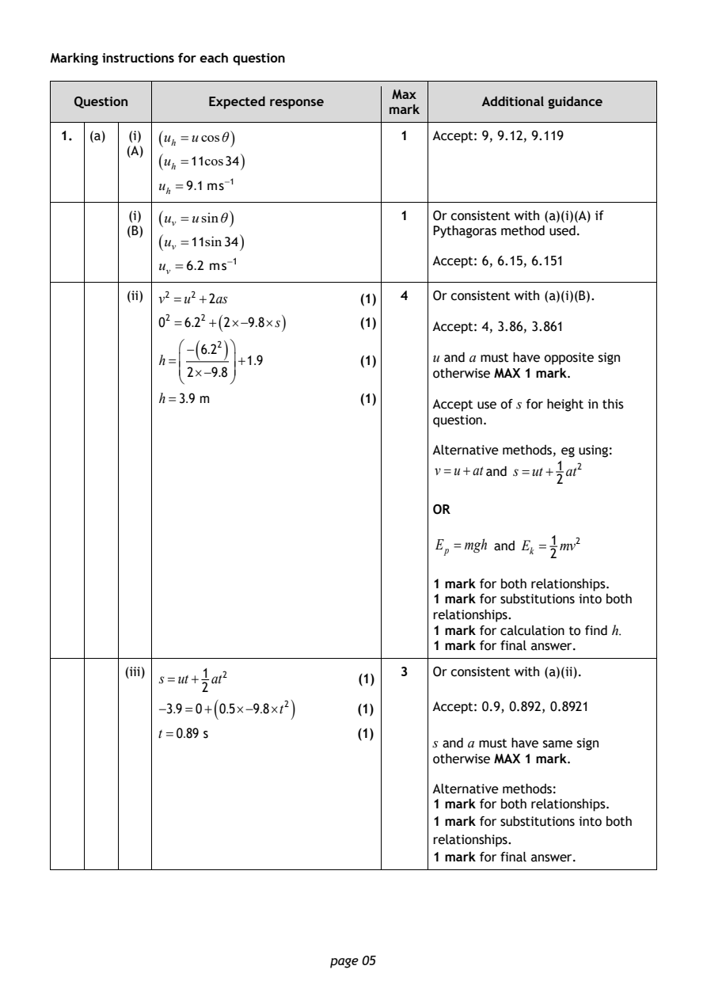
Selectable page text
Marking instructions for each question
Max
Question Expected response Additional guidance
mark
1. (a) (i) (uₕ =ucosθ) 1 Accept: 9, 9.12, 9.119
(A)
(uₕ =11cos34)
uₕ =9.1 ms⁻¹
(i) (uᵥ =usinθ) 1 Or consistent with (a)(i)(A) if
(B) Pythagoras method used.
(uᵥ =11sin34)
Accept: 6, 6.15, 6.151
uᵥ =6.2 ms⁻¹
(ii) v² =u²+2as (1) 4 Or consistent with (a)(i)(B).
0² =6.2² +(2×−9.8×s) (1)
Accept: 4, 3.86, 3.861
− ( 6.2² )
h= +1.9 (1) u and a must have opposite sign
2×−9.8
otherwise MAX 1 mark.
h=3.9 m (1)
Accept use of s for height in this
question.
Alternative methods, eg using:
1
v=u+atand s=ut+ at²
2
OR
Eₚ =mgh and Eₖ = 1 mv²
2
1 mark for both relationships.
1 mark for substitutions into both
relationships.
1 mark for calculation to find h.
1 mark for final answer.
(iii) 1 3 Or consistent with (a)(ii).
s=ut+ at² (1)
2
( )
−3.9=0+ 0.5×−9.8×t² (1) Accept: 0.9, 0.892, 0.8921
t =0.89 s (1)
s and a must have same sign
otherwise MAX 1 mark.
Alternative methods:
1 mark for both relationships.
1 mark for substitutions into both
relationships.
1 mark for final answer.
page 05PDF page 6
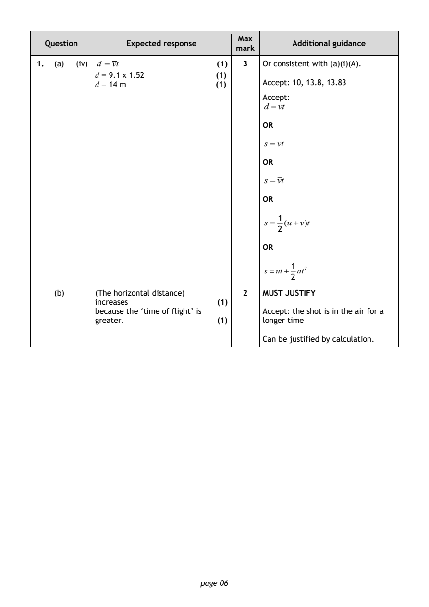
Selectable page text
Max
Question Expected response Additional guidance
mark
1. (a) (iv) d = vt (1) 3 Or consistent with (a)(i)(A).
d = 9.1 x 1.52 (1)
d = 14 m (1) Accept: 10, 13.8, 13.83
Accept:
d =vt
OR
s =vt
OR
s =vt
OR
1
s = (u+v)t
2
OR
1
s=ut+ at²
2
(b) (The horizontal distance) 2 MUST JUSTIFY
increases (1)
because the ‘time of flight’ is Accept: the shot is in the air for a
greater. (1) longer time
Can be justified by calculation.
page 06PDF page 7
Paper 2, Question 2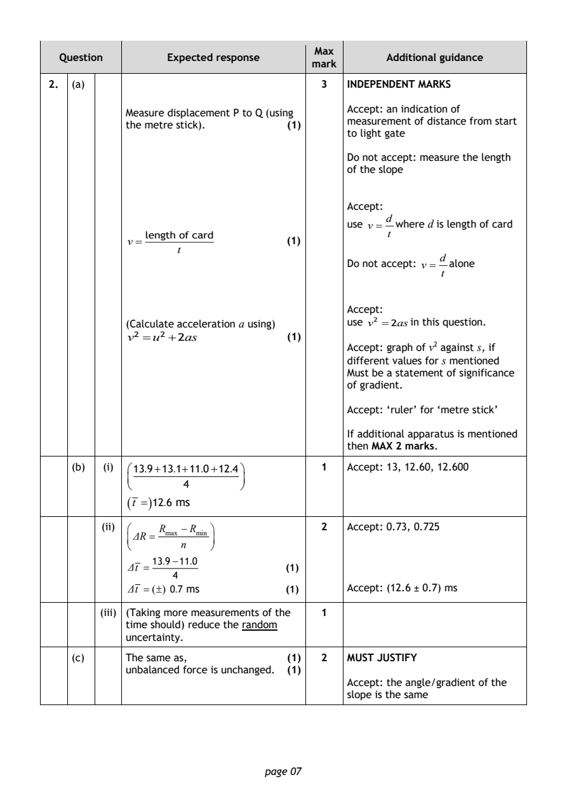
Selectable page text
Max
Question Expected response Additional guidance
mark
2. (a) 3 INDEPENDENT MARKS
Accept: an indication of
Measure displacement P to Q (using
measurement of distance from start
the metre stick). (1)
to light gate
Do not accept: measure the length
of the slope
Accept:
d
use v = where d is length of card
length of card t
v= (1)
t
d
Do not accept: v = alone
t
Accept:
(Calculate acceleration a using) use v² =2asin this question.
v² =u² +2as (1)
Accept: graph of v² against s, if
different values for s mentioned
Must be a statement of significance
of gradient.
Accept: ‘ruler’ for ‘metre stick’
If additional apparatus is mentioned
then MAX 2 marks.
(b) (i) 13.9+13.1+11.0+12.4 1 Accept: 13, 12.60, 12.600
4
(t =)12.6 ms
(ii) Rₘₐₓ −Rₘᵢₙ 2 Accept: 0.73, 0.725
ΔR =
n
13.9−11.0
Δt = (1)
4
Δt =(±) 0.7 ms (1) Accept: (12.6 ± 0.7) ms
(iii) (Taking more measurements of the 1
time should) reduce the random
uncertainty.
(c) The same as, (1) 2 MUST JUSTIFY
unbalanced force is unchanged. (1)
Accept: the angle/gradient of the
slope is the same
page 07PDF page 8
Paper 2, Question 3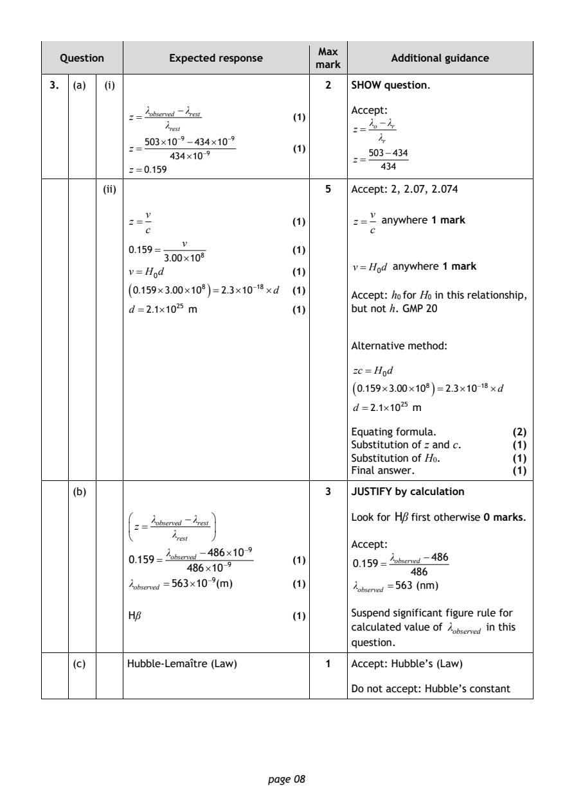
Selectable page text
Max
Question Expected response Additional guidance
mark
3. (a) (i) 2 SHOW question.
λₒ_{b}ₛₑᵣᵥ −λᵣₑₛₜ Accept:
z= ed (1)
λᵣₑₛₜ λₒ−λᵣ
z=
503×10⁻⁹−434×10⁻⁹
λᵣ
z= (1)
434×10⁻⁹
z=
503−434
z=0.159 434
(ii) 5 Accept: 2, 2.07, 2.074
v v
z = (1) z= anywhere 1 mark
c c
v
0.159= (1)
3.00×10⁸
v=H₀d anywhere 1 mark
v=H₀d (1)
( )
0.159×3.00×10⁸ =2.3×10⁻¹⁸×d (1)
Accept: h for H in this relationship,
d =2.1×10²⁵ m (1) but not h.⁰ GMP 2⁰0
Alternative method:
zc=H₀d
(
0.159×3.00×10⁸
)
=2.3×10⁻¹⁸×d
d =2.1×10²⁵ m
Equating formula. (2)
Substitution of z and c. (1)
Substitution of H₀. (1)
Final answer. (1)
(b) 3 JUSTIFY by calculation
λₒ_{b}ₛₑᵣᵥ −λᵣₑₛₜ Look for Hβfirst otherwise 0 marks.
z= e
λᵣ^{d}ₑₛₜ
Accept:
λₒ_{b}ₛₑᵣᵥ −486×10⁻⁹
0.159= e (1) 0.159= λₒ_{b}ₛₑᵣᵥ e −486
48^{d}6×10⁻⁹
48^{d}6
λₒ_{b}ₛₑᵣᵥ =563×10⁻⁹(m) (1) λₒ_{b}ₛₑᵣᵥ =563 (nm)
ed ed
Hβ (1) Suspend significant figure rule for
calculated value of λₒ_{b}ₛₑᵣᵥ in this
ed
question.
(c) Hubble-Lemaître (Law) 1 Accept: Hubble’s (Law)
Do not accept: Hubble’s constant
page 08PDF page 9
Paper 2, Question 4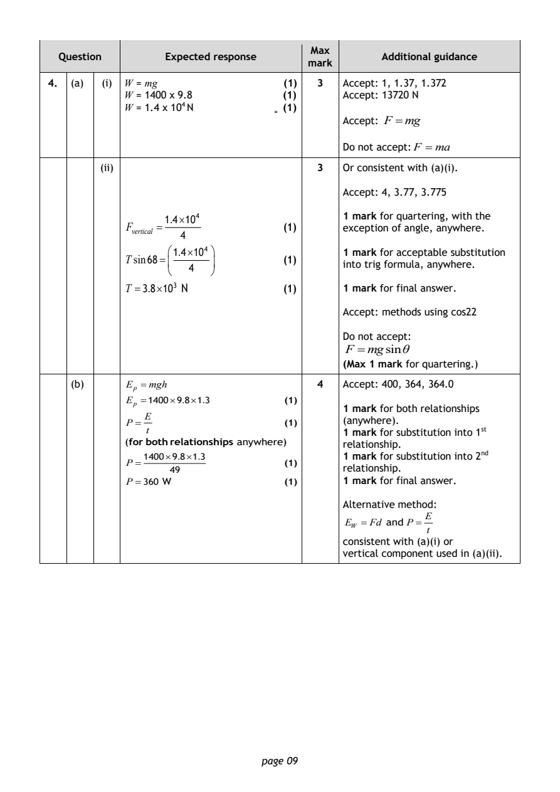
Selectable page text
Max
Question Expected response Additional guidance
mark
4. (a) (i) W = mg (1) 3 Accept: 1, 1.37, 1.372
W = 1400 x 9.8 (1) Accept: 13720 N
W = 1.4 x 10⁴ N (1)
Accept: F =mg
Do not accept:F = ma
(ii) 3 Or consistent with (a)(i).
Accept: 4, 3.77, 3.775
1.4×10⁴ 1 mark for quartering, with the
Fᵥₑᵣₜᵢ_{c}ₐₗ = (1) exception of angle, anywhere.
4
1.4×10⁴ 1 mark for acceptable substitution
Tsin68= (1) into trig formula, anywhere.
4
T =3.8×10³ N (1) 1 mark for final answer.
Accept: methods using cos22
Do not accept:
F =mgsinθ
(Max 1 mark for quartering.)
(b) Eₚ =mgh 4 Accept: 400, 364, 364.0
Eₚ =1400×9.8×1.3 (1)
1 mark for both relationships
E
P= (1) (anywhere).
t 1 mark for substitution into 1^{s}^{t}
(for both relationships anywhere) relationship.
1400×9.8×1.3 1 mark for substitution into 2ⁿ^{d}
P= (1)
49 relationship.
P=360 W (1) 1 mark for final answer.
Alternative method:
E
E_{W} =Fd and P=
t
consistent with (a)(i) or
vertical component used in (a)(ii).
page 09PDF page 10
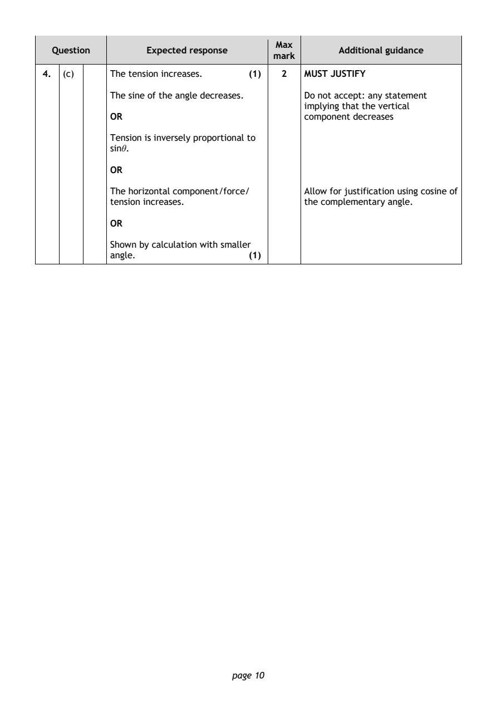
Selectable page text
Max
Question Expected response Additional guidance
mark
4. (c) The tension increases. (1) 2 MUST JUSTIFY
The sine of the angle decreases. Do not accept: any statement
implying that the vertical
OR component decreases
Tension is inversely proportional to
sinθ.
OR
The horizontal component/force/ Allow for justification using cosine of
tension increases. the complementary angle.
OR
Shown by calculation with smaller
angle. (1)
page 10PDF page 11
Paper 2, Question 5Selectable page text
Max
Question Expected response Additional guidance
mark
5. Award 3 marks where the candidate 3 Candidates may use a variety of
has demonstrated a good physics arguments to answer this
understanding of the physics question.
involved. They show a good
comprehension of the physics of the Award marks based on candidates
situation and provide a logically demonstrating overall good,
correct answer to the question reasonable, limited, or no
posed. This type of response might understanding.
include a statement of the principles
involved, a relationship or an
equation, and the application of
these to respond to the problem.
The answer does not need to be
‘excellent’ or ‘complete’ for the
candidate to gain full marks.
Award 2 marks where the candidate
has demonstrated a reasonable
understanding of the physics
involved. They make some
statement(s) that are relevant to the
situation, showing that they have
understood the problem.
Award 1 mark where the candidate
has demonstrated a limited
understanding of the physics
involved. They make some
statement(s) that are relevant to the
situation, showing that they have
understood at least a little of the
physics within the problem.
Award 0 marks where the candidate
has not demonstrated an
understanding of the physics
involved. There is no evidence that
they have recognised the area of
physics involved, or they have not
given any statement of a relevant
physics principle. Award this mark
also if the candidate merely restates
the physics given in the question.
page 11PDF page 12
Paper 2, Question 6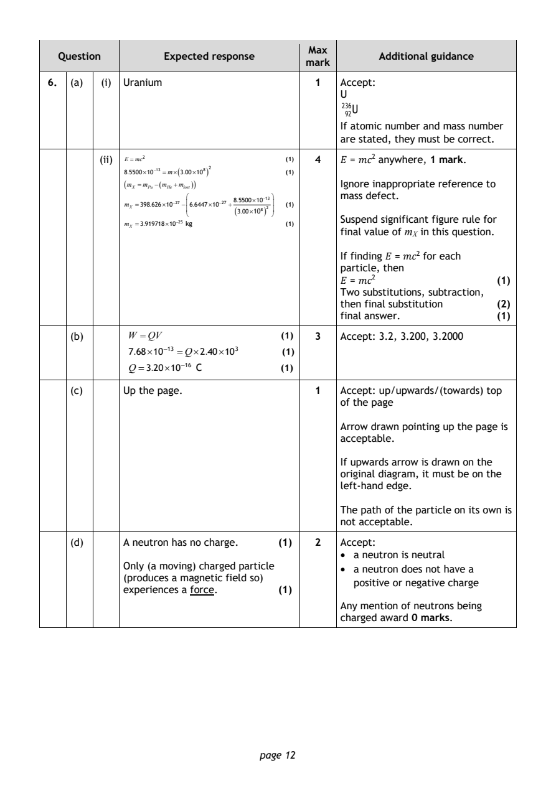
Selectable page text
Max
Question Expected response Additional guidance
mark
6. (a) (i) Uranium 1 Accept:
U
236U
92
If atomic number and mass number
are stated, they must be correct.
(ii) ^{E}=mc² (1) 4 𝐸 = 𝑚𝑐² anywhere, 1 mark.
8.5500×10⁻¹³=m×(3.00×10⁸)² (1)
(m_{X} =m_{P}ᵤ−(m_{H}ₑ+mₗₒₛₜ)) Ignore inappropriate reference to
mass defect.
m_{X} =398.626×10⁻²⁷−6.6447×10⁻²⁷+
8.5500×10⁻¹³
(1)
(3.00×10⁸)²
Suspend significant figure rule for
m_{X} =3.919718×10⁻²⁵ kg (1)
final value of m_{X} in this question.
If finding 𝐸 = 𝑚𝑐² for each
particle, then
𝐸 = 𝑚𝑐² (1)
Two substitutions, subtraction,
then final substitution (2)
final answer. (1)
(b) W =QV (1) 3 Accept: 3.2, 3.200, 3.2000
7.68×10⁻¹³ =Q×2.40×10³ (1)
Q=3.20×10⁻¹⁶ C (1)
(c) Up the page. 1 Accept: up/upwards/(towards) top
of the page
Arrow drawn pointing up the page is
acceptable.
If upwards arrow is drawn on the
original diagram, it must be on the
left-hand edge.
The path of the particle on its own is
not acceptable.
(d) A neutron has no charge. (1) 2 Accept:
• a neutron is neutral
Only (a moving) charged particle
• a neutron does not have a
(produces a magnetic field so)
positive or negative charge
experiences a force. (1)
Any mention of neutrons being
charged award 0 marks.
page 12PDF page 13
Paper 2, Question 7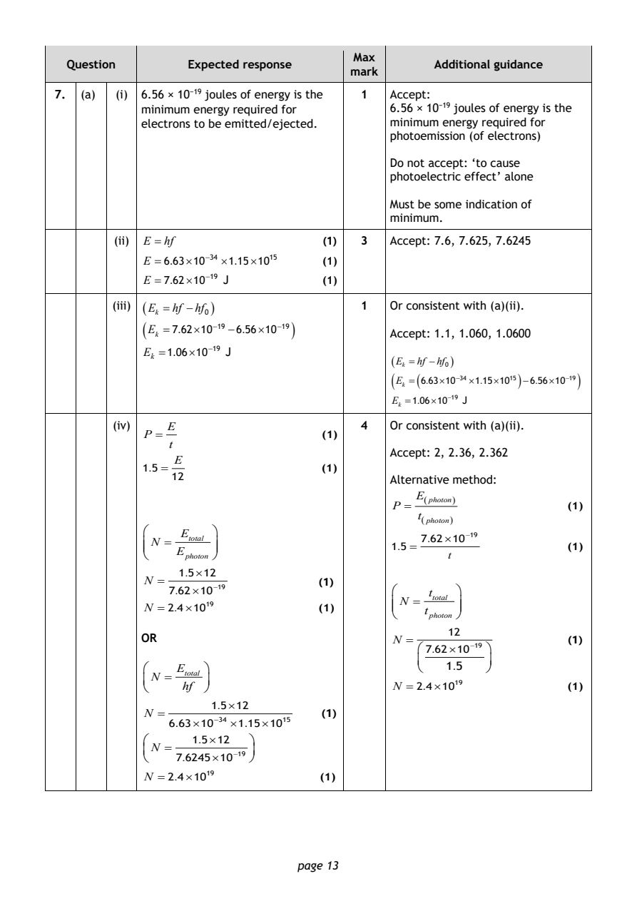
Selectable page text
Max
Question Expected response Additional guidance
mark
7. (a) (i) 6.56 × 10⁻¹⁹ joules of energy is the 1 Accept:
minimum energy required for 6.56 × 10⁻¹⁹ joules of energy is the
electrons to be emitted/ejected. minimum energy required for
photoemission (of electrons)
Do not accept: ‘to cause
photoelectric effect’ alone
Must be some indication of
minimum.
(ii) E =hf (1) 3 Accept: 7.6, 7.625, 7.6245
E =6.63×10⁻³⁴ ×1.15×10¹⁵ (1)
E =7.62×10⁻¹⁹ J (1)
(iii) (Eₖ =hf −hf₀) 1 Or consistent with (a)(ii).
( )
Eₖ =7.62×10⁻¹⁹−6.56×10⁻¹⁹
Accept: 1.1, 1.060, 1.0600
Eₖ =1.06×10⁻¹⁹ J
(Eₖ =hf −hf₀)
( ( ) )
Eₖ = 6.63×10⁻³⁴×1.15×10¹⁵ −6.56×10⁻¹⁹
Eₖ =1.06×10⁻¹⁹ J
(iv) E 4 Or consistent with (a)(ii).
P = (1)
t
Accept: 2, 2.36, 2.362
E
1.5= (1)
12 Alternative method:
E ₚₕₒₜ
( on)
P = (1)
t ₚₕₒₜ
( on)
Eₜₒₜₐₗ
N =
7.62×10⁻¹⁹
1.5= (1)
Eₚₕₒₜₒ
n t
1.5×12
N = (1)
7.62×10⁻¹⁹ tₜₒₜₐₗ
N =
N =2.4×10¹⁹ (1) tₚₕₒₜₒ
n
12
OR N = (1)
7.62×10⁻¹⁹
Eₜₒₜₐₗ 1.5
N =
hf N =2.4×10¹⁹ (1)
1.5×12
N = (1)
6.63×10⁻³⁴ ×1.15×10¹⁵
1.5×12
N =
7.6245×10⁻¹⁹
N =2.4×10¹⁹ (1)
page 13PDF page 14
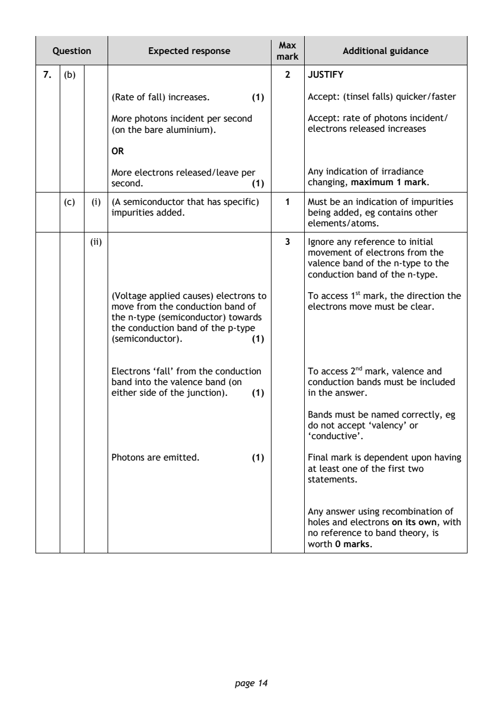
Selectable page text
Max
Question Expected response Additional guidance
mark
7. (b) 2 JUSTIFY
(Rate of fall) increases. (1) Accept: (tinsel falls) quicker/faster
More photons incident per second Accept: rate of photons incident/
(on the bare aluminium). electrons released increases
OR
More electrons released/leave per Any indication of irradiance
second. (1) changing, maximum 1 mark.
(c) (i) (A semiconductor that has specific) 1 Must be an indication of impurities
impurities added. being added, eg contains other
elements/atoms.
(ii) 3 Ignore any reference to initial
movement of electrons from the
valence band of the n-type to the
conduction band of the n-type.
(Voltage applied causes) electrons to To access 1^{s}^{t} mark, the direction the
move from the conduction band of electrons move must be clear.
the n-type (semiconductor) towards
the conduction band of the p-type
(semiconductor). (1)
Electrons ‘fall’ from the conduction To access 2ⁿ^{d} mark, valence and
band into the valence band (on conduction bands must be included
either side of the junction). (1) in the answer.
Bands must be named correctly, eg
do not accept ‘valency’ or
‘conductive’.
Photons are emitted. (1) Final mark is dependent upon having
at least one of the first two
statements.
Any answer using recombination of
holes and electrons on its own, with
no reference to band theory, is
worth 0 marks.
page 14PDF page 15
Paper 2, Question 8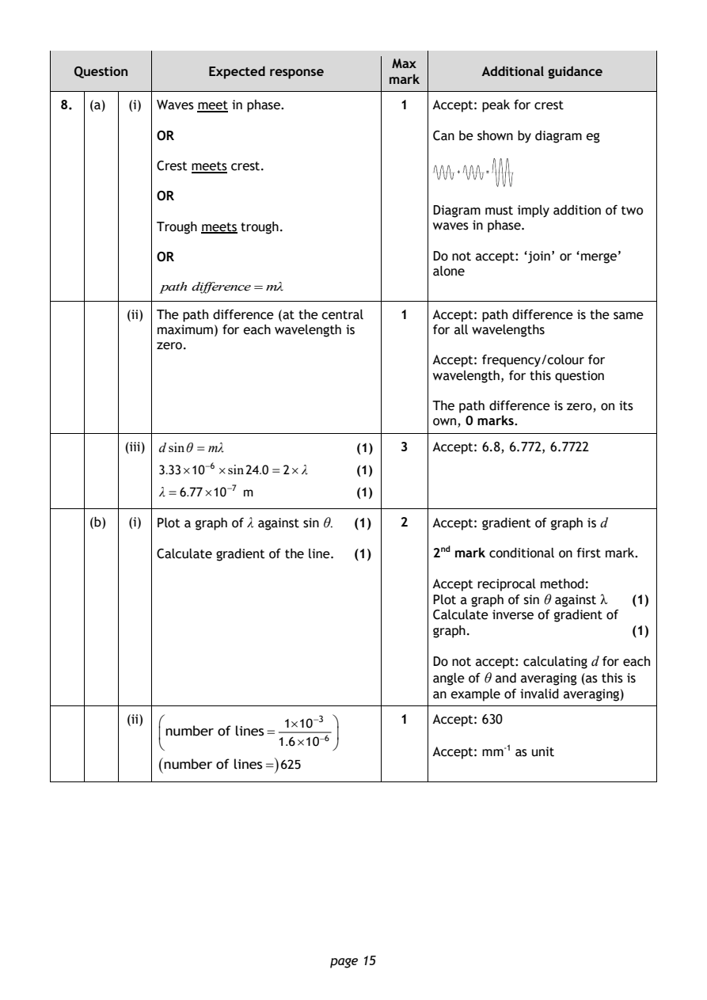
Selectable page text
Max
Question Expected response Additional guidance
mark
8. (a) (i) Waves meet in phase. 1 Accept: peak for crest
OR Can be shown by diagram eg
Crest meets crest.
OR
Diagram must imply addition of two
Trough meets trough. waves in phase.
OR Do not accept: ‘join’ or ‘merge’
alone
path difference=mλ
(ii) The path difference (at the central 1 Accept: path difference is the same
maximum) for each wavelength is for all wavelengths
zero.
Accept: frequency/colour for
wavelength, for this question
The path difference is zero, on its
own, 0 marks.
(iii) dsinθ =mλ (1) 3 Accept: 6.8, 6.772, 6.7722
3.33×10⁻⁶ ×sin24.0 =2×λ (1)
λ =6.77×10⁻⁷ m (1)
(b) (i) Plot a graph of λ against sin θ. (1) 2 Accept: gradient of graph is d
Calculate gradient of the line. (1) 2ⁿ^{d} mark conditional on first mark.
Accept reciprocal method:
Plot a graph of sin θ against λ (1)
Calculate inverse of gradient of
graph. (1)
Do not accept: calculating d for each
angle of θ and averaging (as this is
an example of invalid averaging)
(ii) 1×10⁻³ 1 Accept: 630
number of lines=
1.6×10⁻⁶
Accept: mm⁻¹ as unit
(number of lines=)625
page 15PDF page 16
Paper 2, Question 9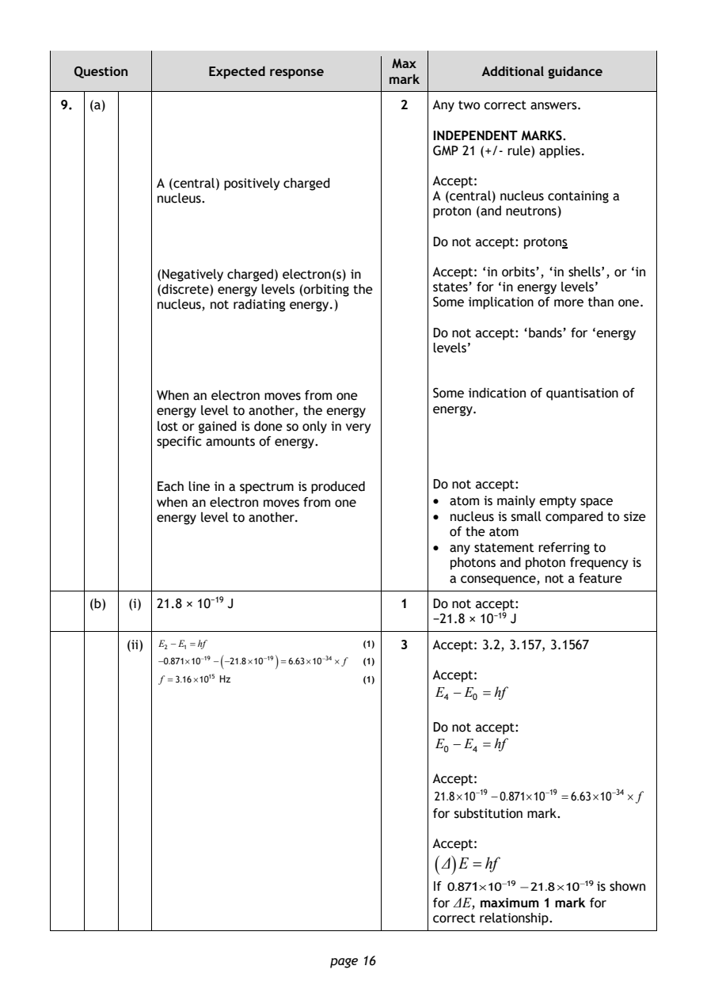
Selectable page text
Max
Question Expected response Additional guidance
mark
9. (a) 2 Any two correct answers.
INDEPENDENT MARKS.
GMP 21 (+/- rule) applies.
A (central) positively charged Accept:
nucleus. A (central) nucleus containing a
proton (and neutrons)
Do not accept: protons
(Negatively charged) electron(s) in Accept: ‘in orbits’, ‘in shells’, or ‘in
(discrete) energy levels (orbiting the states’ for ‘in energy levels’
nucleus, not radiating energy.) Some implication of more than one.
Do not accept: ‘bands’ for ‘energy
levels’
When an electron moves from one Some indication of quantisation of
energy level to another, the energy energy.
lost or gained is done so only in very
specific amounts of energy.
Each line in a spectrum is produced Do not accept:
when an electron moves from one • atom is mainly empty space
energy level to another. • nucleus is small compared to size
of the atom
• any statement referring to
photons and photon frequency is
a consequence, not a feature
(b) (i) 21.8 × 10⁻¹⁹ J 1 Do not accept:
−21.8 × 10⁻¹⁹ J
(ii) ^{E}₂−E₁=hf (1) 3 Accept: 3.2, 3.157, 3.1567
−0.871×10⁻¹⁹−(−21.8×10⁻¹⁹ )=6.63×10⁻³⁴×f
(1)
Accept:
f =3.16×10¹⁵ Hz (1)
E₄ −E₀ =hf
Do not accept:
E₀ −E₄ =hf
Accept:
21.8×10⁻¹⁹ −0.871×10⁻¹⁹ =6.63×10⁻³⁴× f
for substitution mark.
Accept:
(Δ)E = hf
If 0.871×10⁻¹⁹ −21.8×10⁻¹⁹is shown
for ΔE, maximum 1 mark for
correct relationship.
page 16PDF page 17
Paper 2, Question 10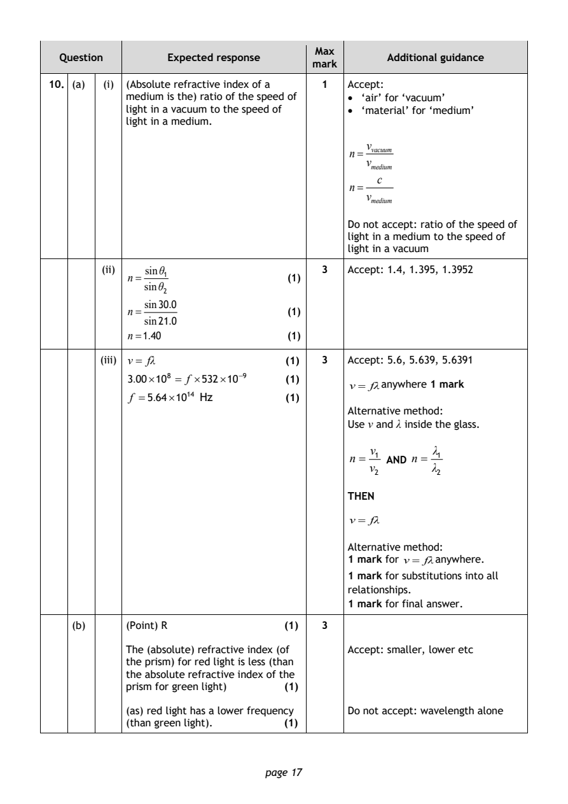
Selectable page text
Max
Question Expected response Additional guidance
mark
10. (a) (i) (Absolute refractive index of a 1 Accept:
medium is the) ratio of the speed of • ‘air’ for ‘vacuum’
light in a vacuum to the speed of • ‘material’ for ‘medium’
light in a medium.
vᵥₐ_{c}ᵤᵤₘ
n=
vₘₑ_{d}
cⁱ^{u}^{m}
n=
vₘₑ_{d}ᵢᵤₘ
Do not accept: ratio of the speed of
light in a medium to the speed of
light in a vacuum
(ii) sinθ₁ 3 Accept: 1.4, 1.395, 1.3952
n= (1)
sinθ₂
sin30.0
n= (1)
sin21.0
n=1.40 (1)
(iii) v = fλ (1) 3 Accept: 5.6, 5.639, 5.6391
3.00×10⁸ = f ×532×10⁻⁹ (1)
v= fλanywhere 1 mark
f =5.64×10¹⁴ Hz (1)
Alternative method:
Use v and λ inside the glass.
v₁ λ₁
n = AND n =
v₂ λ₂
THEN
v= fλ
Alternative method:
1 mark for v= fλanywhere.
1 mark for substitutions into all
relationships.
1 mark for final answer.
(b) (Point) R (1) 3
The (absolute) refractive index (of Accept: smaller, lower etc
the prism) for red light is less (than
the absolute refractive index of the
prism for green light) (1)
(as) red light has a lower frequency Do not accept: wavelength alone
(than green light). (1)
page 17PDF page 18
Paper 2, Question 11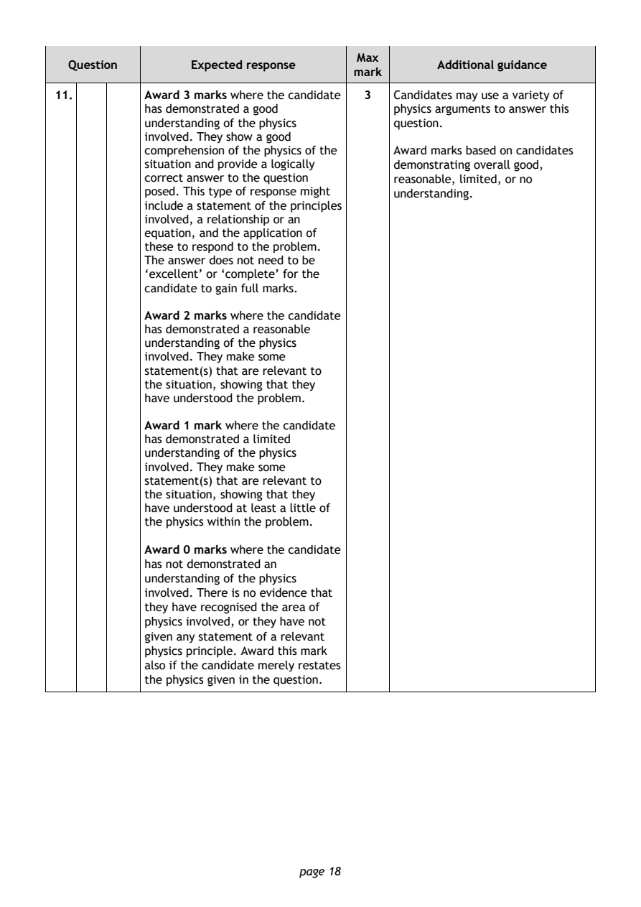
Selectable page text
Max
Question Expected response Additional guidance
mark
11. Award 3 marks where the candidate 3 Candidates may use a variety of
has demonstrated a good physics arguments to answer this
understanding of the physics question.
involved. They show a good
comprehension of the physics of the Award marks based on candidates
situation and provide a logically demonstrating overall good,
correct answer to the question reasonable, limited, or no
posed. This type of response might understanding.
include a statement of the principles
involved, a relationship or an
equation, and the application of
these to respond to the problem.
The answer does not need to be
‘excellent’ or ‘complete’ for the
candidate to gain full marks.
Award 2 marks where the candidate
has demonstrated a reasonable
understanding of the physics
involved. They make some
statement(s) that are relevant to
the situation, showing that they
have understood the problem.
Award 1 mark where the candidate
has demonstrated a limited
understanding of the physics
involved. They make some
statement(s) that are relevant to
the situation, showing that they
have understood at least a little of
the physics within the problem.
Award 0 marks where the candidate
has not demonstrated an
understanding of the physics
involved. There is no evidence that
they have recognised the area of
physics involved, or they have not
given any statement of a relevant
physics principle. Award this mark
also if the candidate merely restates
the physics given in the question.
page 18PDF page 19
Paper 2, Question 12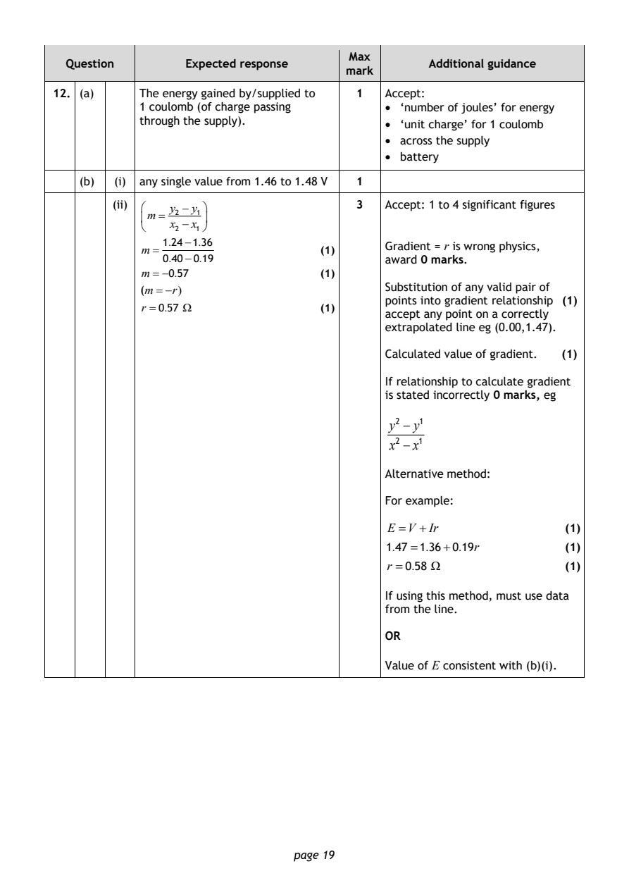
Selectable page text
Max
Question Expected response Additional guidance
mark
12. (a) The energy gained by/supplied to 1 Accept:
1 coulomb (of charge passing • ‘number of joules’ for energy
through the supply).
• ‘unit charge’ for 1 coulomb
• across the supply
• battery
(b) (i) any single value from 1.46 to 1.48 V 1
(ii) y₂ −y₁ 3 Accept: 1 to 4 significant figures
m=
x₂ −x₁
1.24−1.36 Gradient = r is wrong physics,
m= (1)
0.40−0.19 award 0 marks.
m=−0.57 (1)
Substitution of any valid pair of
(m=−r)
points into gradient relationship (1)
r =0.57 Ω (1)
accept any point on a correctly
extrapolated line eg (0.00,1.47).
Calculated value of gradient. (1)
If relationship to calculate gradient
is stated incorrectly 0 marks, eg
y² − y¹
x² −x¹
Alternative method:
For example:
E =V +Ir (1)
1.47=1.36+0.19r (1)
r =0.58 Ω (1)
If using this method, must use data
from the line.
OR
Value of E consistent with (b)(i).
page 19PDF page 20
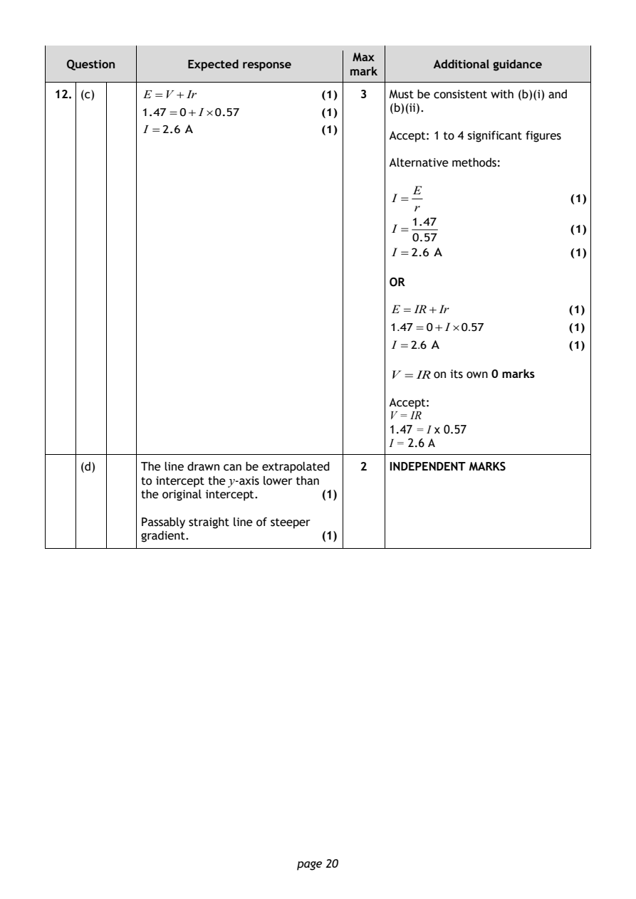
Selectable page text
Max
Question Expected response Additional guidance
mark
12. (c) E =V +Ir (1) 3 Must be consistent with (b)(i) and
1.47 =0+I×0.57 (1)
(b)(ii).
I =2.6 A (1)
Accept: 1 to 4 significant figures
Alternative methods:
E
I = (1)
r
1.47
I = (1)
0.57
I =2.6 A (1)
OR
E = IR+Ir (1)
1.47 =0+I×0.57 (1)
I =2.6 A (1)
V = IRon its own 0 marks
Accept:
V = IR
1.47 = I x 0.57
I = 2.6 A
(d) The line drawn can be extrapolated 2 INDEPENDENT MARKS
to intercept the y-axis lower than
the original intercept. (1)
Passably straight line of steeper
gradient. (1)
page 20PDF page 21
Paper 2, Question 13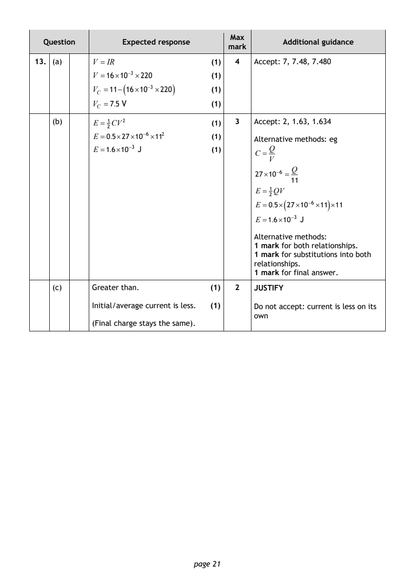
Selectable page text
Max
Question Expected response Additional guidance
mark
13. (a) V = IR (1) 4 Accept: 7, 7.48, 7.480
V =16×10⁻³×220 (1)
( )
V_{C} =11− 16×10⁻³×220 (1)
V_{C} =7.5 V (1)
(b) E = ₂¹CV² (1) 3 Accept: 2, 1.63, 1.634
E =0.5×27×10⁻⁶×11² (1)
Alternative methods: eg
E =1.6×10⁻³ J (1) Q
C =
V
Q
27×10⁻⁶ =
11
E = ₂¹QV
( )
E =0.5× 27×10⁻⁶×11 ×11
E =1.6×10⁻³ J
Alternative methods:
1 mark for both relationships.
1 mark for substitutions into both
relationships.
1 mark for final answer.
(c) Greater than. (1) 2 JUSTIFY
Initial/average current is less. (1) Do not accept: current is less on its
own
(Final charge stays the same).
page 21PDF page 22
Paper 2, Question 14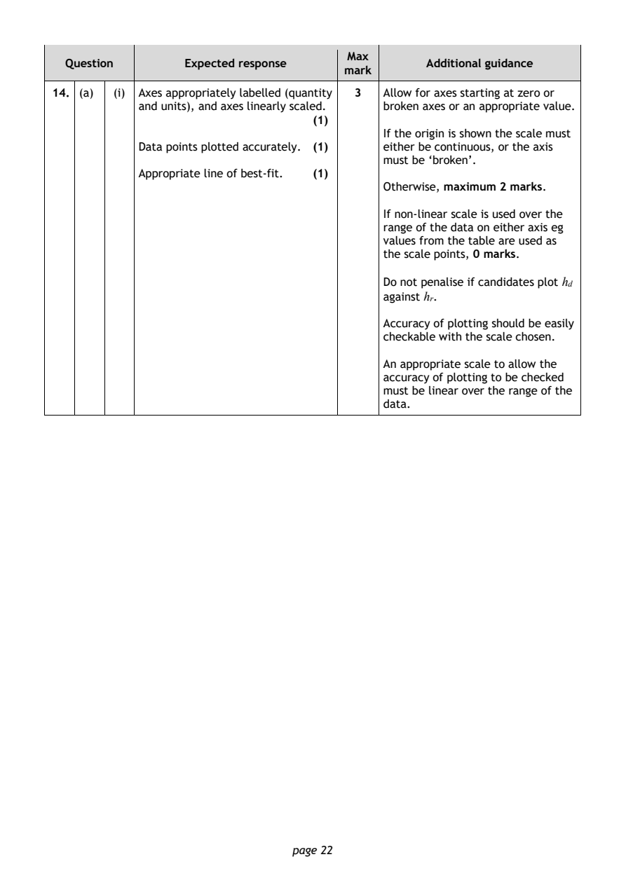
Selectable page text
Max
Question Expected response Additional guidance
mark
14. (a) (i) Axes appropriately labelled (quantity 3 Allow for axes starting at zero or
and units), and axes linearly scaled. broken axes or an appropriate value.
(1)
If the origin is shown the scale must
Data points plotted accurately. (1) either be continuous, or the axis
must be ‘broken’.
Appropriate line of best-fit. (1)
Otherwise, maximum 2 marks.
If non-linear scale is used over the
range of the data on either axis eg
values from the table are used as
the scale points, 0 marks.
Do not penalise if candidates plot h_{d}
against hᵣ.
Accuracy of plotting should be easily
checkable with the scale chosen.
An appropriate scale to allow the
accuracy of plotting to be checked
must be linear over the range of the
data.
page 22PDF page 23
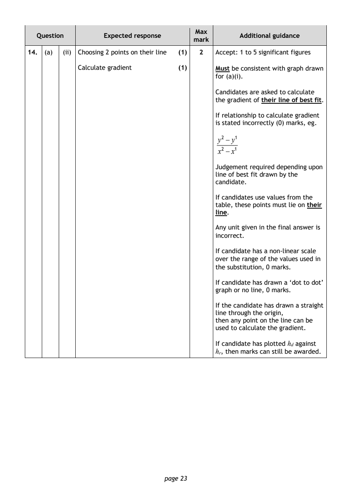
Selectable page text
Max
Question Expected response Additional guidance
mark
14. (a) (ii) Choosing 2 points on their line (1) 2 Accept: 1 to 5 significant figures
Calculate gradient (1) Must be consistent with graph drawn
for (a)(i).
Candidates are asked to calculate
the gradient of their line of best fit.
If relationship to calculate gradient
is stated incorrectly (0) marks, eg.
y² − y¹
x² −x¹
Judgement required depending upon
line of best fit drawn by the
candidate.
If candidates use values from the
table, these points must lie on their
line.
Any unit given in the final answer is
incorrect.
If candidate has a non-linear scale
over the range of the values used in
the substitution, 0 marks.
If candidate has drawn a ‘dot to dot’
graph or no line, 0 marks.
If the candidate has drawn a straight
line through the origin,
then any point on the line can be
used to calculate the gradient.
If candidate has plotted h_{d} against
h , then marks can still be awarded.
r
page 23PDF page 24
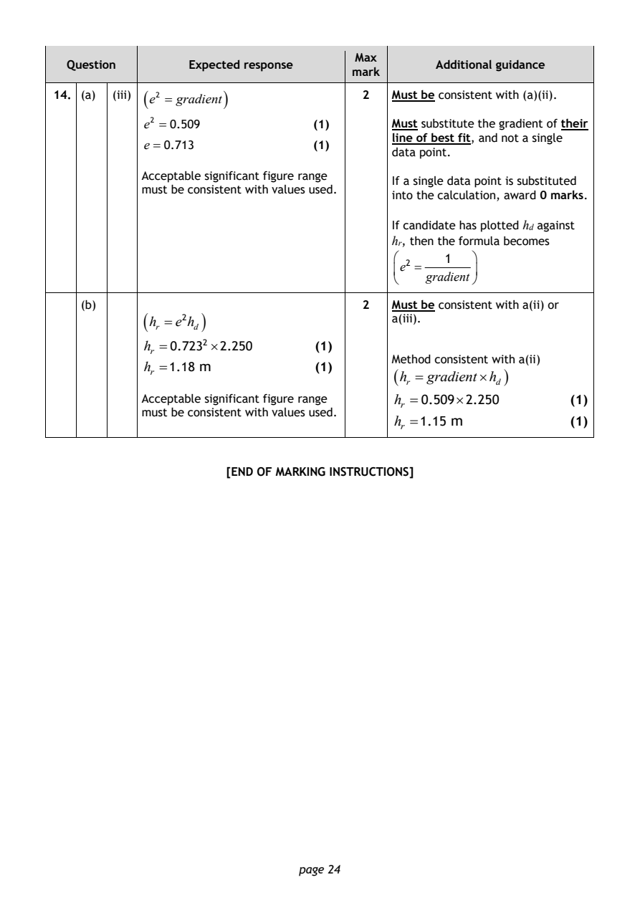
Selectable page text
Max
Question Expected response Additional guidance
mark
14. (a) (iii) ( e² = gradient ) 2 Must be consistent with (a)(ii).
e² = 0.509 (1) Must substitute the gradient of their
line of best fit, and not a single
e = 0.713 (1)
data point.
Acceptable significant figure range
If a single data point is substituted
must be consistent with values used.
into the calculation, award 0 marks.
If candidate has plotted h_{d} against
h , then the formula becomes
r
1
e² =
gradient
(b) 2 Must be consistent with a(ii) or
( hᵣ =e²h_{d} ) a(iii).
hᵣ =0.723²×2.250 (1)
Method consistent with a(ii)
hᵣ =1.18 m (1)
(hᵣ = gradient×h_{d} )
Acceptable significant figure range hᵣ =0.509×2.250 (1)
must be consistent with values used.
hᵣ =1.15 m (1)
[END OF MARKING INSTRUCTIONS]
page 24